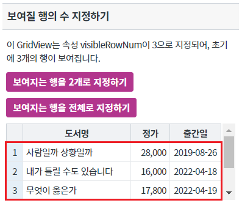
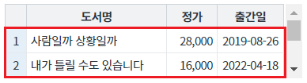
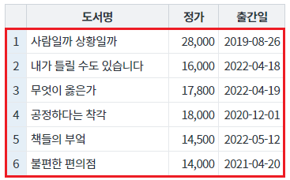
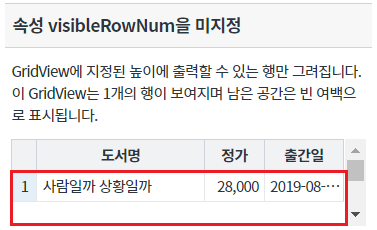
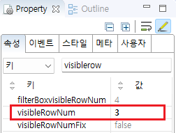
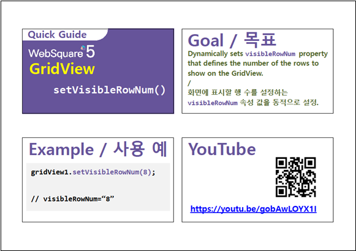

GridView에 보여질 행의 개수를 지정하는 예제입니다. 이 기능은 아래의 속성과 함수로 사용할 수 있습니다. - visibleRowNum : (속성) 화면에 표현할 행의 개수. - setVisibleRowNum : (함수) 속성 visibleRowNum을 스크립트로 지정.
보여질 행의 수 지정하기
속성 visibleRowNum을 미지정
영역 [보여질 행의 수 지정하기]의 GridView를 확인합니다.
GridView에 보여지는 행의 수는 3개입니다.
[브라우저(Chrome) 실행 예시]

버튼 보여지는 행을 2개로 지정하기를 클릭합니다.
GridView에 보여지는 행이 2개로 변경됩니다.
[브라우저(Chrome) 실행 예시]

버튼 보여지는 행을 전체로 지정하기를 클릭합니다.
GridView에 보여지는 행이 전체로 변경됩니다.
[브라우저(Chrome) 실행 예시]

영역 [속성 visibleRowNum을 미지정]의 GridView를 확인합니다.
GridView에 지정된 높이 100px에 출력될 수 있는 최대의 행이 표시됩니다.
1개의 행이 표시되고 남은 여백은 공백으로 표시됩니다.
[브라우저(Chrome) 실행 예시]

GridView의 속성을 정의합니다.
[필수] visibleRowNum="설정값" //화면에 보여질 행의 수
예시1) visibleRowNum="3" //화면에 보여질 행의 수를 3개로 지정
그림 1.웹스퀘어5 SP5 스튜디오의 Property View(속성창) 예시

[소스 코드 예시]
<!-- gridView 의 소스 본문 예시 --> <w2:gridView visibleRowNum="3" style="height:70px;" defaultCellHeight="24" dataList="data:dlt_books"> <!-- 중략 --> </w2:gridView>
GridView의 함수 setVisibleRowNum을 사용합니다.
[소스 코드 예시]
//예제 파일의 스크립트 "scwin.btn_ex1_onclick" 또는 "scwin.btn_ex2_onclick"를 참고하세요. //GridView 'grd_exam1'의 보여지는 행을 2개로 지정하기 grd_exam1.setVisibleRowNum(2); /*** 보이는 행을 전체로 지정하기 ***/ var numTotalRow; //GridView 'grd_exam1'의 전체 행 개수 반환 받기 numTotalRow = grd_exam1.getTotalRow(); //GridView 'grd_exam1'의 보여지는 행을 전체로 지정하기 grd_exam1.setVisibleRowNum(numTotalRow);
visibleRowNum
setVisibleRowNum( rowCount )
getVisibleRowNum( )
[웹스퀘어5 SP5 개발 가이드] GridView
링크 : https://docs1.inswave.com/sp5_user_guide/bc10c1b82c9a2a0b#e1c4658baf7e726f
[웹스퀘어5 SP5 개발 가이드] GridView 함수를 통한 지정 (setVisibleRowNum())
링크 : https://docs1.inswave.com/sp5_user_guide/86bdcf48029b958b#3548ab30d9760acf
GridView 함수를 통한 지정 (setVisibleRowNum())
링크 : https://youtu.be/gobAwLOYX1I
